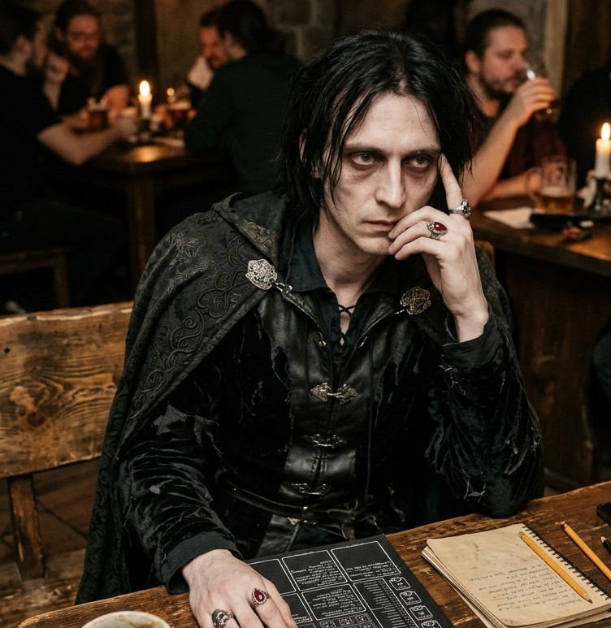

Emocionálny upír
Osadníci
Vyber si hráča a vysaj jeho životnú energiu (zisti jeho auru): skorumpovanú, čistú alebo neznámu. Skorumpovaní hráči patria k zloduchom a čistí hráči patria do tímu dobrákov.
Neznáme ciele môžu byť: Postupne doplním